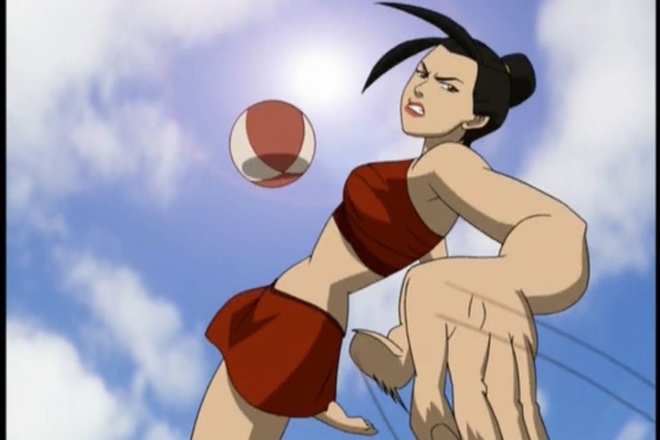

Tão antigos quanto o homem, os esportes são uma das invenções mais benéficas do homem. Além de manter o corpo saudável, ainda auxiliam na criação de uma série de comportamentos positivos, como a humildade, a união, a empatia, dentre outros.
E os esportes com bolas são, se, nenhuma dúvida, os mais populares. Mas você sabe a diferença entre algum deles? É justamente isso que iremos descobrir abaixo.
| Esporte | Origem | Ambiente | Objetivo | Equipe | ||
| 1 | |
Baseboll | EUA,1971 | Campo com 1/4 de círculo, de 92 a 108,2m de raio. | Realizar o maior número de corridas. | Nove jogadores em cada time. |
| 2 |  | Beach soccer | 1930,Brasil | Quadra de areia com 35 ou 37 , x 26 ou 27 de largura. | Realizar gols no campo adversário. | Cinco jogadores em cada time. |
| 3 | |
Biribol | 1968,Brasil. | Piscina com 4 x 8 x 1,3m | Derrubar a bola na quadra adversária. | 2 a 4 jogadores por time. |
| 4 | Frescobol | Brasil, 1946. | Ao ar livre | Manter a bola no ar pelo maior tempo possível. | Geralmente um contra um. | |
Para mais informações clique aqui!